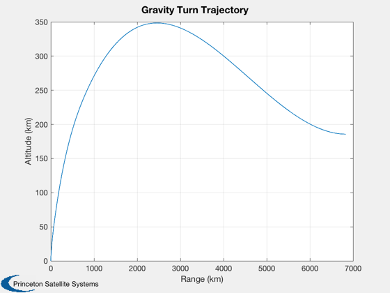
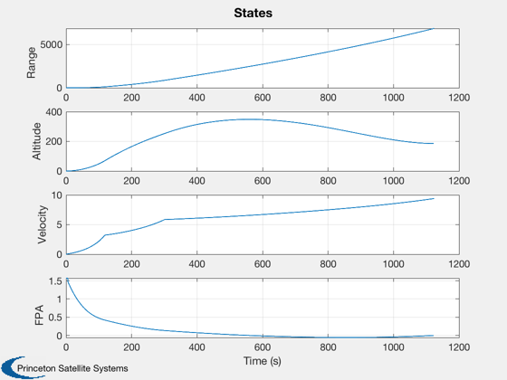
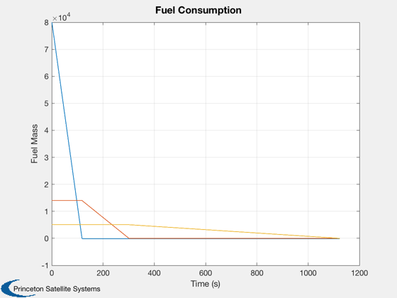

Solve for the initial conditions to perform a gravity turn trajectory.
Iterate to compute the flight path angle perturbation (pitchover) to
achieve a gravity turn launch trajectory that results in the desired
flight path angle at burnout. Compare this ad hoc approach to the
optimization performed in GravityTurnDemo.
------------------------------------------------------------------------
See also RHSLaunchVehicle2D, MSThrustModel, RK4
------------------------------------------------------------------------
Contents
Initialize everything
dT = 0.5;
mStage = 5000;
mFuel = 100000;
thrust = 1.7e3;
Isp = 405;
lv = CreateRocketModel(mStage,mFuel,thrust,Isp,'SingleStage','l');
d = LaunchRHSData(2,lv);
d.aE = 0;
d.cDA = 1;
gammaP0 = 0.01;
useRockot = true;
if useRockot
lv = RocketDatabase('rockot');
lv = SetPayloadMass(lv,1000);
d.rocket = lv;
d.cDA = 0.35*[5 5 0];
d.aE = 0;
gammaP0 = 0.05;
end
nSim = ceil(sum(lv.tBurn)/dT)+1;
gammaFinalDes = 0;
gammaFinal = 1;
kPitch = 10;
nTry = 10;
tol = 1e-8;
gammas = zeros(2,nTry);
j = 1;
Numerical loop around the simulation
format long g
fprintf(1,'\tPitch-over angle \t FPA at burnout\n');
while( j<nTry && abs(gammaFinalDes-gammaFinal)>tol )
if( j==1 )
gammaPitchover = gammaP0;
gammaPitchoverPrev = 0;
gammaFinalPrev = gammaFinalDes;
else
deltaGamma0 = gammaPitchover - gammaPitchoverPrev;
gammaPitchoverPrev = gammaPitchover;
gammaPitchover = gammaPitchover - (deltaGamma0/deltaGammaF)*(gammaFinal - gammaFinalDes);
end
x = [0; 0; 0; pi/2; lv.mSP'];
xPlot = zeros(length(x),nSim);
for k = 1:nSim
xPlot(:,k) = x;
if( k == kPitch )
x(4) = pi/2 - gammaPitchover;
end
x = RK4( @RHSLaunchVehicle2D, x, dT, 0, d );
if( x(end) <= 0 )
hFinal = x(2);
vFinal = x(3);
deltaGammaF = x(4) - gammaFinal;
gammaFinal = x(4);
gammas(:,j) = [gammaPitchover;gammaFinal];
disp(gammas(:,j)')
break;
end
end
j = j+1;
end
gammas = gammas(:,1:j-1);
Pitch-over angle FPA at burnout
0.05 0.188723106468457
0.0616312388515672 0.13746062320256
0.0928204680752305 -0.0384572642657701
0.0860022164024663 0.00751375419621145
0.0871166286741767 0.000358708591819956
0.0871724982351543 -3.53732281678005e-06
0.0871719526702084 1.50893647070057e-09
Printouts
[vBO,dV,tOF] = BurnoutVelocity( lv );
range = vBO/pi*cos((pi/2-gammaFinalDes)/2)*sum(tOF);
fprintf(1,'Predicted burnout velocity: %f km/s\n',vBO);
fprintf(1,' Actual burnout velocity: %f km/s\n',vFinal);
fprintf(1,'Predicted range: %f km\n',range);
fprintf(1,' Actual range: %f km\n',x(1));
kPlot = 1:k;
Plot2D(xPlot(1,kPlot),xPlot(2,kPlot),'Range (km)','Altitude (km)','Gravity Turn Trajectory');
Plot2D(dT*kPlot,xPlot(1:4,kPlot),'Time (s)',{'Range','Altitude','Velocity','FPA'},'States');
Plot2D(dT*kPlot,xPlot(5:end,kPlot),'Time (s)','Fuel Mass','Fuel Consumption');
Predicted burnout velocity: 10.604871 km/s
Actual burnout velocity: 9.395955 km/s
Predicted range: 2680.451342 km
Actual range: 6840.663930 km
  